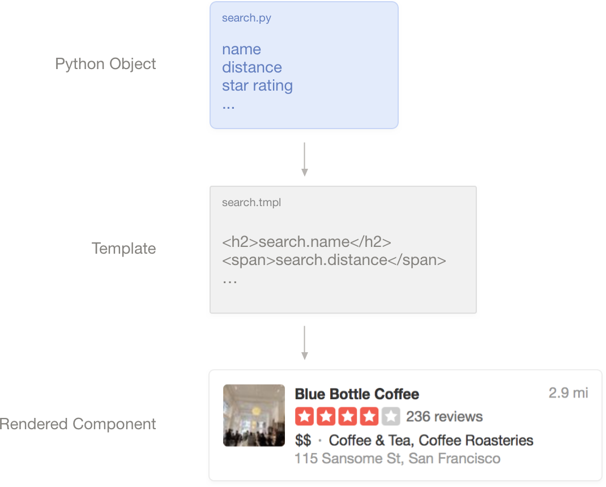

Making reusable UI
For the fall of 2017, I interned at Yelp as a software engineer and rewrote lots of the mobile site front-end to use reusable, scalable UI components. This greatly improved development time (no more duplicated code), and from a design perspective it kept the mobile site always looking up-to-date with the other Yelp products.
The Yelp mobile site looked old and outdated. There was lots of duplicated code and the UI always fell behind the desktop site.
Yelp had a style guide that they used for the desktop site. It made it very easy for developers to implement front-end code without worrying about any styling. This also made it easy to keep a consistent UI across the Yelp product. So we thought "why not use this for the mobile site"?
Some of the updates include:
To make this happen we made components with a templating language that we could pass Python objects into. The component would read the data passed to it and render appropriately.
Although the UI still isn't perfect, it sets the foundation for a scalable system. This project was a great way to understand how style guides and reusable UI work in a software product, and this definately made me a better designer as a result.